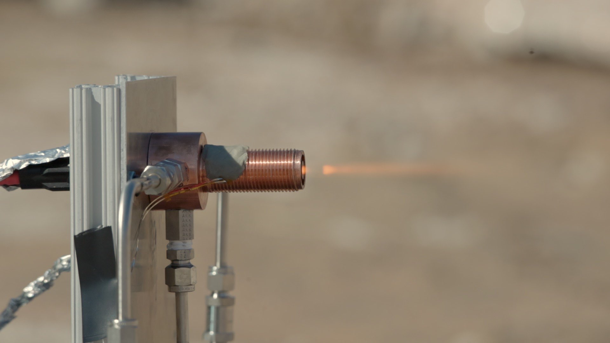
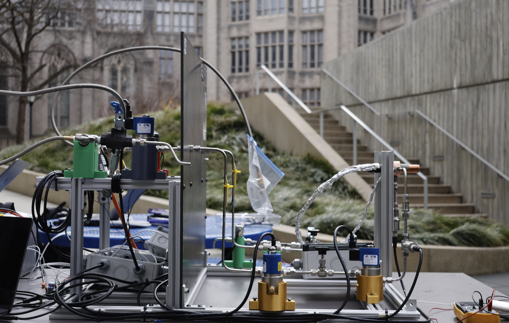
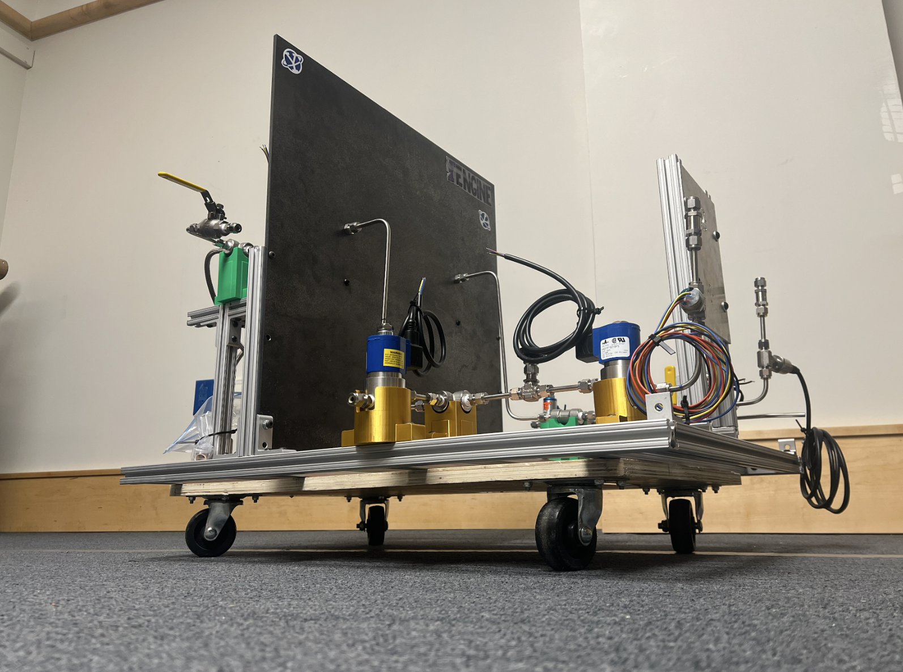
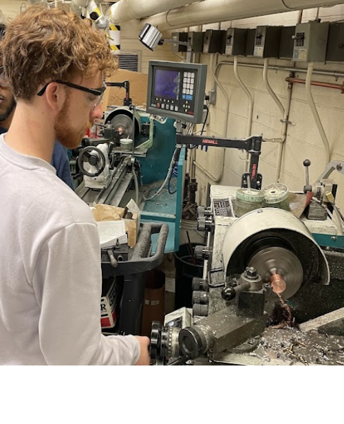

Repeatable setup
Fixed mounting points kept the igniter position consistent across tests.
Project Liquid · Propulsion Test Hardware
Designed and built the standalone test stand for an augmented spark igniter. My work focused on the frame, blast shielding, mounting, plumbing layout, and test-readiness of the setup.




Fixed mounting points kept the igniter position consistent across tests.
Regulators, valves, tubing, and fittings were exposed for pre-test inspection.
The firing end was separated from the control side by the blast shield.
The stand allowed standalone firing before installing igniter hardware into the engine system.
Hot-fire footage was used to confirm flame behavior and document test outcomes.
The layout left room to adjust fittings, wiring, valves, and the igniter mount between firings.